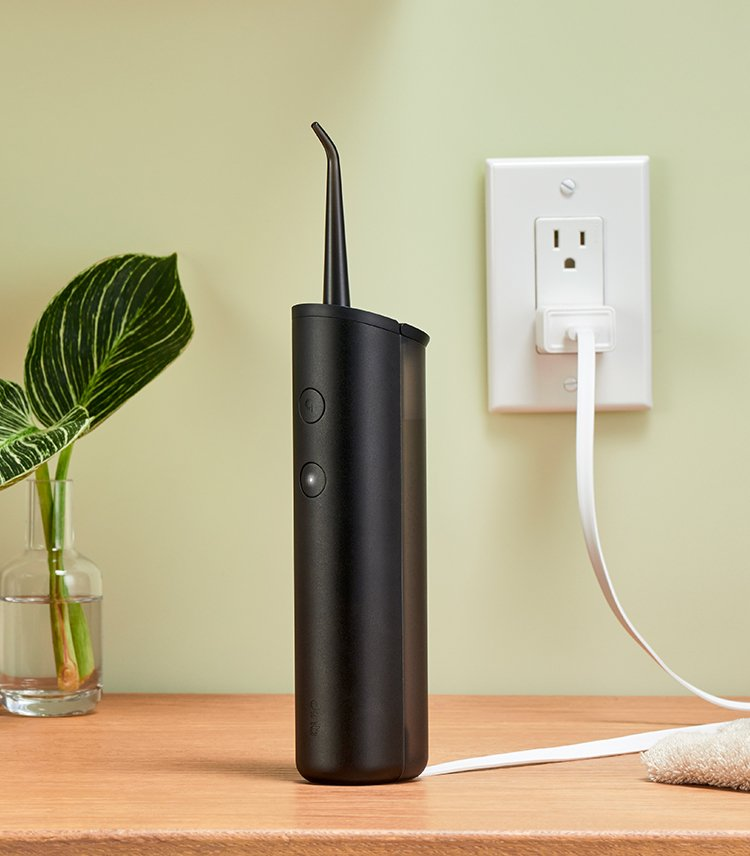
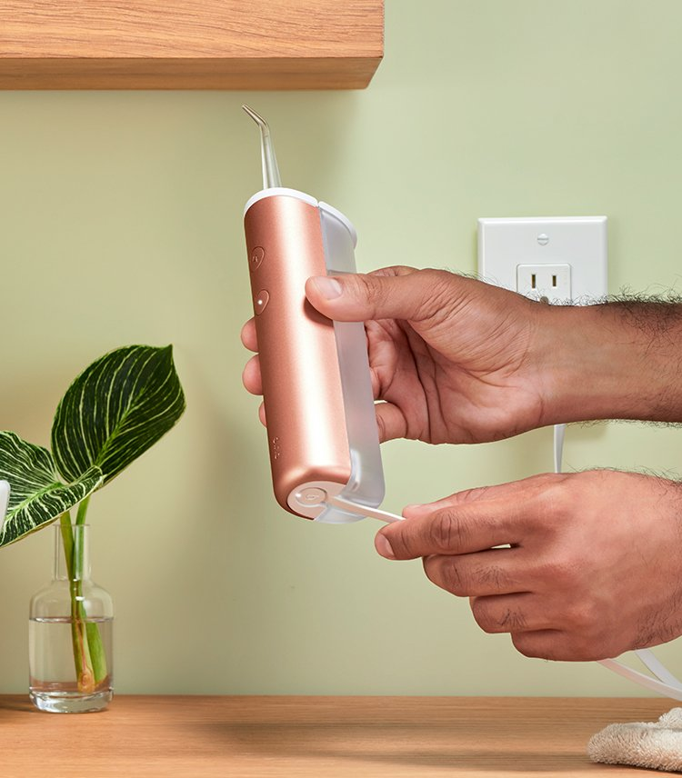
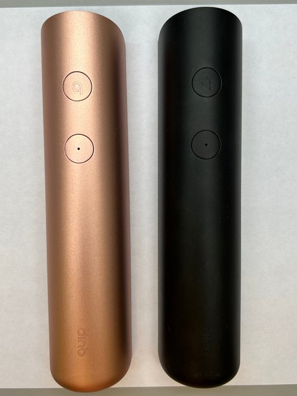
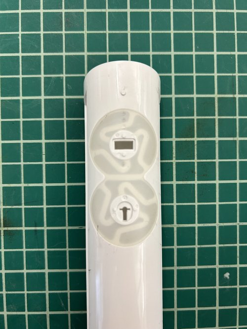

The quip water flosser is the most complicated electromechanical assembly that quip has brought to market. I was responsible for the design and refinement of the product from Alpha Prototype to Mass Production.

Early prototype testing and refinements.

Finalized design placed in a real-world bathroom setting.

User experience testing for ergonomic comfort.

Waterproofing and gasket refinement testing.

Comparison of different color finishes for aesthetic choices.

Demonstration of water flow and sealing performance.

Internal components and charging mechanism details.